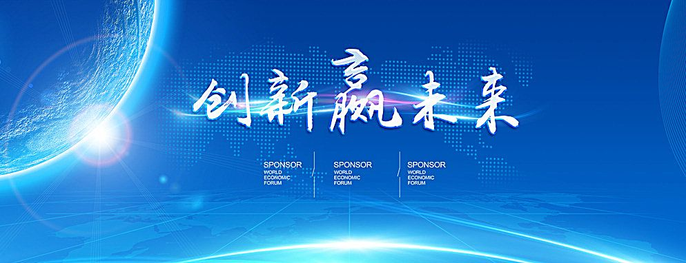

2016-6-02 15:23 人民网-科技频道
人民网北京6月2日电 （记者 魏艳）中国科学技术协会第九次全国代表大会今天下午在京闭幕。会上宣布，中国北方车辆研究所中国兵器首席专家、研究员毛明等10人获“全国杰出科技人才”奖；海军工程大学电力电子技术研究所教授王东等10人获“中国优秀青年科技人才”奖。
“全国杰出科技人才” 奖是“全国优秀科技工作者”奖的子奖项，于2015年经中央批准通过，每两年评选一次，主要表彰奖励在承担重大科研项目、重大工程以及前沿、重点学科领域取得原创性、标志性重大成果，在科技界享有崇高声誉、在科技创新中起到核心领军作用的一线科技人才。本届获奖者涵盖了物理、化学、生命、农业、医学、地球、信息、材料、工程科学等学科领域，最小年龄46岁，最大年龄60岁，平均年龄52岁；中国科学院院士3人，女性3人。
“中国优秀青年科技人才”奖是中国青年科技奖的子奖项，由中组部、人社部、中国科协共同主办，也是每两年评选一次，每次评选名额不超过10名，在“中国青年科技奖”获奖者中优中选优产生。本届获奖者涵盖了数学、物理、化学、生命、农业、医学、地球、工程、材料、信息科学等学科领域。第十四届中国青年科技奖获奖者9名，往届中国青年科技奖获奖者1名，最小年龄35岁，最大年龄39岁，平均年龄37岁，女性1人。
“全国杰出科技人才”奖获奖者名单
（按姓氏笔画排序）
方 忠 中国科学院物理研究所副所长、量子模拟科学中心主任、研究员
高 福 中国科学院微生物研究所研究员、中国疾病预防控制中心副主任，中国科学院院士
“中国优秀青年科技人才”奖获奖者名单
（按姓氏笔画排序）
王 东 海军工程大学电力电子技术研究所教授、舰船综合电力技术国防科技重点实验室电力集成研究室主任